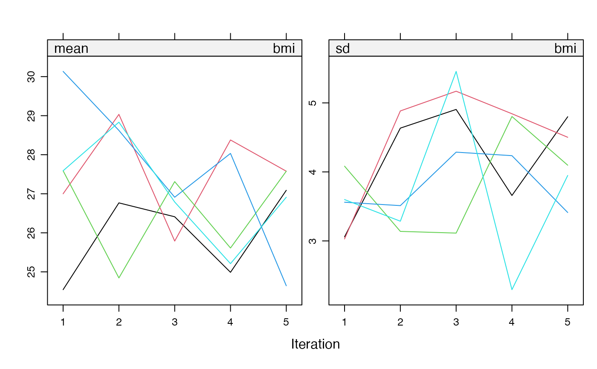
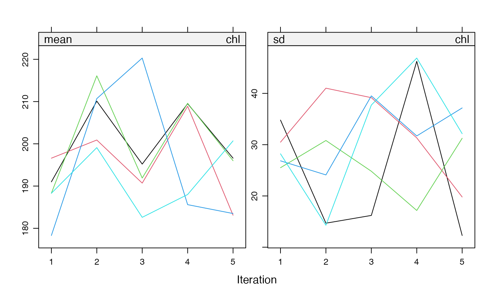

The mids object is an S3 class that represents a multiply imputed
data set. The mids() function is the S3 constructor.
The following functions produce a mids object:
mids(), mice(), mice.mids(),
cbind(), rbind(), ibind(),
as.mids() and filter().
Usage
mids(
data = data.frame(),
imp = list(),
m = integer(),
where = matrix,
blocks = list(),
call = match.call(),
nmis = integer(),
method = character(),
predictorMatrix = matrix(),
visitSequence = character(),
formulas = list(),
calltype = character(),
post = character(),
blots = list(),
ignore = logical(),
seed = integer(),
iteration = integer(),
lastSeedValue = tryCatch(get(".Random.seed", envir = globalenv(), mode = "integer",
inherits = FALSE), error = function(e) NULL),
chainMean = list(),
chainVar = list(),
loggedEvents = data.frame(),
version = packageVersion("mice"),
date = Sys.Date()
)
# S3 method for class 'mids'
plot(
x,
y = NULL,
theme = mice.theme(),
layout = c(2, 3),
type = "l",
col = 1:10,
lty = 1,
...
)
# S3 method for class 'mids'
print(x, ...)
# S3 method for class 'mids'
summary(object, ...)Arguments
- data
A data frame or a matrix containing the incomplete data. Missing values are coded as
NA.- imp
Calculated field
- m
Number of multiple imputations. The default is
m=5.- where
A data frame or matrix with logicals of the same dimensions as
dataindicating where in the data the imputations should be created. The default,where = is.na(data), specifies that the missing data should be imputed. Thewhereargument may be used to overimpute observed data, or to skip imputations for selected missing values. Note: Imputation methods that generate imptutations outside ofmice, likemice.impute.panImpute()may depend on a complete predictor space. In that case, a customwherematrix can not be specified.- blocks
List of vectors with variable names per block. List elements may be named to identify blocks. Variables within a block are imputed by a multivariate imputation method (see
methodargument). By default each variable is placed into its own block, which is effectively fully conditional specification (FCS) by univariate models (variable-by-variable imputation). Only variables whose names appear inblocksare imputed. The relevant columns in thewherematrix are set toFALSEof variables that are not block members. A variable may appear in multiple blocks. In that case, it is effectively re-imputed each time that it is visited.- call
Calculated field
- nmis
Calculated field
- method
Can be either a single string, or a vector of strings with length
length(blocks), specifying the imputation method to be used for each column in data. If specified as a single string, the same method will be used for all blocks. The default imputation method (when no argument is specified) depends on the measurement level of the target column, as regulated by thedefaultMethodargument. Columns that need not be imputed have the empty method"". See details.- predictorMatrix
A numeric matrix of
length(blocks)rows andncol(data)columns, containing 0/1 data specifying the set of predictors to be used for each target column. Each row corresponds to a variable block, i.e., a set of variables to be imputed. A value of1means that the column variable is used as a predictor for the target block (in the rows). By default, thepredictorMatrixis a square matrix ofncol(data)rows and columns with all 1's, except for the diagonal. Note: For two-level imputation models (which have"2l"in their names) other codes (e.g,2or-2) are also allowed.- visitSequence
A vector of block names of arbitrary length, specifying the sequence of blocks that are imputed during one iteration of the Gibbs sampler. A block is a collection of variables. All variables that are members of the same block are imputed when the block is visited. A variable that is a member of multiple blocks is re-imputed within the same iteration. The default
visitSequence = "roman"visits the blocks (left to right) in the order in which they appear inblocks. One may also use one of the following keywords:"arabic"(right to left),"monotone"(ordered low to high proportion of missing data) and"revmonotone"(reverse of monotone). Special case: If you specify bothvisitSequence = "monotone"andmaxit = 1, then the procedure will edit thepredictorMatrixto conform to the monotone pattern. Realize that convergence in one iteration is only guaranteed if the missing data pattern is actually monotone. The procedure does not check this.- formulas
A named list of formula's, or expressions that can be converted into formula's by
as.formula. List elements correspond to blocks. The block to which the list element applies is identified by its name, so list names must correspond to block names. Theformulasargument is an alternative to thepredictorMatrixargument that allows for more flexibility in specifying imputation models, e.g., for specifying interaction terms.- calltype
A character vector of
length(block)elements that indicates how the imputation model is specified. Entries can one of two values:"pred"or"formula". Ifcalltype = "pred", the predictors of the imputation model for the block are specified by the corresponding row of thepredictorMatrix. Ifcalltype = "formula"the imputation model is specified by relevant entry informulas. The default depends on the presence of theformulasargument. Ifformulasis present, thenmice()setscalltype = "formula"for any block for which a formula is specified. Otherwise,calltype = "pred".- post
A vector of strings with length
ncol(data)specifying expressions as strings. Each string is parsed and executed within thesampler()function to post-process imputed values during the iterations. The default is a vector of empty strings, indicating no post-processing. Multivariate (block) imputation methods ignore thepostparameter.- blots
A named
listofalist's that can be used to pass down arguments to lower level imputation function. The entries of elementblots[[blockname]]are passed down to the function called for blockblockname.- ignore
A logical vector of
nrow(data)elements indicating which rows are ignored when creating the imputation model. The defaultNULLincludes all rows that have an observed value of the variable to imputed. Rows withignoreset toTRUEdo not influence the parameters of the imputation model, but are still imputed. We may use theignoreargument to splitdatainto a training set (on which the imputation model is built) and a test set (that does not influence the imputation model estimates). Note: Multivariate imputation methods, likemice.impute.jomoImpute()ormice.impute.panImpute(), do not honour theignoreargument.- seed
An integer that is used as argument by the
set.seed()for offsetting the random number generator. Default is to leave the random number generator alone.- iteration
Calculated field
- lastSeedValue
Calculated field
- chainMean
Calculated field
- chainVar
Calculated field
- loggedEvents
Calculated field
- version
Calculated field
- date
Calculated field
- x
An object of class
mids- y
A formula that specifies which variables, stream and iterations are plotted. If omitted, all streams, variables and iterations are plotted.
- theme
The trellis theme to applied to the graphs. The default is
mice.theme().- layout
A vector of length 2 given the number of columns and rows in the plot. The default is
c(2, 3).- type
Parameter
typeofpanel.xyplot.- col
Parameter
colofpanel.xyplot.- lty
Parameter
ltyofpanel.xyplot.- ...
Others arguments
- object
Object of class
mids
Value
mids() returns a mids object.
plot() returns a xyplot object.
print() returns the input object invisibly.
summary() returns the input object invisibly.
Details
The S3 class mids has the following methods:
bwplot(), complete(),
densityplot(), plot(),
print(), stripplot(), summary(),
with() and xyplot().
Structure
Objects of class "mids" are lists with the following elements:
data:Original (incomplete) data set.
imp:A list of
ncol(data)components with the generated multiple imputations. Each list component is adata.frame(nmis[j]bym) of imputed values for variablej. ANULLcomponent is used for variables for which not imputations are generated.m:Number of imputations.
where:The
whereargument of themice()function.blocks:The
blocksargument of themice()function.call:Call that created the object.
nmis:An Named vector with counts of missing values per variable
method:A vector of strings of
length(blocksspecifying the imputation method per block.predictorMatrix:A numerical matrix of containing integers specifying the predictor set.
visitSequence:A vector of variable and block names that specifies how variables and blocks are visited in one iteration throuh the data.
formulas:A named list of formula's, or expressions that can be converted into formula's by
as.formula. List elements correspond to blocks. The block to which the list element applies is identified by its name, so list names must correspond to block names.post:A vector of strings of length
length(blocks)with commands for post-processing.blots:"Block dots". The
blotsargument to themice()function.ignore:A logical vector of length
nrow(data)indicating the rows indataused to build the imputation model. (new inmice 3.12.0)seed:The seed value of the solution.
iteration:Last Gibbs sampling iteration number.
lastSeedValue:Random number generator state.
chainMean:An array of dimensions
ncolbymaxitbymelements containing the mean of the generated multiple imputations. The array can be used for monitoring convergence. Note that observed data are not present in this mean.chainVar:An array with similar structure as
chainMean, containing the variance of the imputed values.loggedEvents:A
data.framewith five columns containing warnings, corrective actions, and other inside info.version:Version number of
micepackage that created the object.date:Date at which the object was created.
LoggedEvents
The loggedEvents entry is a matrix with five columns containing a
record of automatic removal actions. It is NULL is no action was
made. At initialization the program removes constant variables, and
removes variables to cause collinearity.
During iteration, the program does the following actions:
One or more variables that are linearly dependent are removed (for categorical data, a 'variable' corresponds to a dummy variable)
Proportional odds regression imputation that does not converge and is replaced by
polyreg.
Explanation of elements in loggedEvents:
ititeration number at which the record was added,
imimputation number,
depname of the dependent variable,
methimputation method used,
outa (possibly long) character vector with the names of the altered or removed predictors.
Methods
The mids class of objects has methods for the following
generic functions: print, summary, plot.
Plot
The plot() metho plots the trace lines of the MICE algorithm.
The plot method for a mids object plots the mean imputed
value per imputation and the mean standard deviation of the imputed
values against the iteration number for each of the $m$ replications.
By default, the function creates a plot for each incomplete
variable. On convergence, the streams should intermingle and be free
of any trend.
References
van Buuren S and Groothuis-Oudshoorn K (2011). mice:
Multivariate Imputation by Chained Equations in R. Journal of
Statistical Software, 45(3), 1-67.
doi:10.18637/jss.v045.i03
Examples
data <- data.frame(a = c(1, NA, 3), b = c(NA, 2, 3))
q <- list(
a = structure(
list(`1` = 3, `2` = 3, `3` = 3, `4` = 3, `5` = 3),
row.names = "2", class = "data.frame"),
b = structure(
list(`1` = 3, `2` = 3, `3` = 2, `4` = 2, `5` = 3),
row.names = "1", class = "data.frame"))
imp <- mids(
data = data,
imp = q,
m = 5,
where = is.na(data),
blocks = list(a = "a", b = "b"),
nmis = colSums(is.na(data)),
method = c(a = "mean", b = "norm"),
predictorMatrix = matrix(1, nrow = 2, ncol = 2, dimnames = list(c("a", "b"), c("a", "b"))),
visitSequence = c("a", "b"),
formulas = list(a = a ~ b, b = b ~ a),
post = NULL,
blots = NULL,
ignore = logical(nrow(data)),
seed = 123,
iteration = 1,
chainMean = list(a = c(1, 2, 3), b = c(3, 2, 1)),
chainVar = list(a = c(1.1, 1.2, 1.3), b = c(0.9, 1.0, 1.1)),
loggedEvents = NULL)
print(imp)
#> Class: mids
#> Number of multiple imputations: 5
#> Imputation methods:
#> a b
#> "mean" "norm"
#> PredictorMatrix:
#> a b
#> a 1 1
#> b 1 1
imp <- mice(nhanes, print = FALSE)
plot(imp, bmi + chl ~ .it | .ms, layout = c(2, 1))

